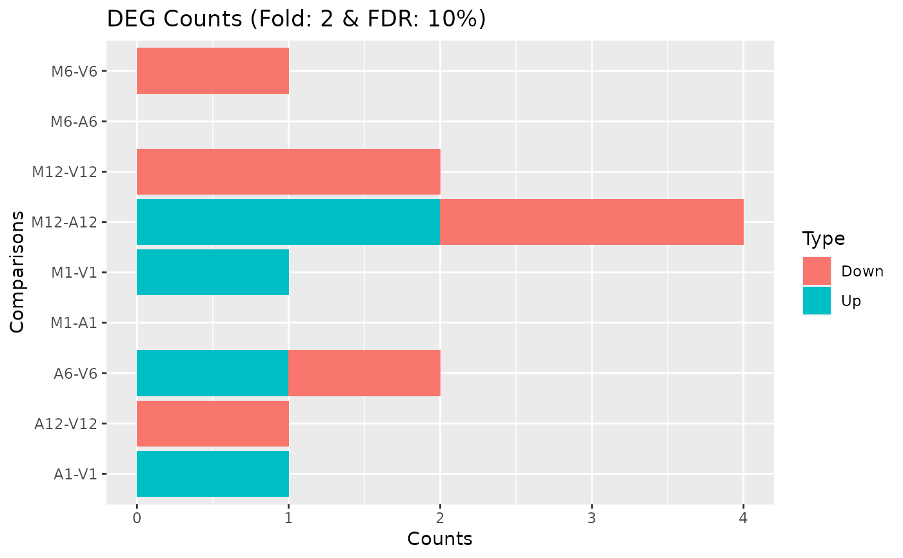

filterDEGs.RdFilters and plots DEG results for a given set of sample comparisons. The gene idenifiers of all (i) Up_or_Down, (ii) Up and (iii) Down regulated genes are stored as separate list components, while the corresponding summary statistics, stored in a fourth list component, is plotted in form of a stacked bar plot.
filterDEGs(degDF, filter, plot = TRUE)data.frame generated by run_edgeR
Named vector with filter cutoffs of format c(Fold=2, FDR=1) where Fold refers to the fold change cutoff (unlogged) and FDR to the p-value cutoff.
Allows to turn plotting behavior on and off with default set to TRUE.
Currently, there is no community standard available how to calculate fold
changes (here logFC) of genomic ranges, such as gene or feature ranges, to
unambiguously refer to them as features with increased or decreased read
abundandce; or in case of gene expression experiments to up or down regulated
genes, respectively. To be consistent within systemPipeR, the
corresponding functions, such as filterDEGs, use here the following
definition. Genomic ranges with positive logFC values are classified as
up and those with negative logFC values as down. This means if a
comparison among two samples a and b is specified in the
corresponding targets file as a-b then the feature with a positive logFC
has a higher _normalized_ read count value in sample a than in sample
b, and vice versa. To inverse this assignment, users want to change the
specification of their chosen sample comparison(s) in the targets file
accordingly, e.g. change a-b to b-a. Alternatively, one can swap
the column order of the matrix assigned to the cmp argument of the
run_edgeR or run_DESeq2 functions. Users should also be aware
that for logFC values close to zero (noise range), the direction of the fold
change (sign of logFC) can be very sensitive to minor differences in the
normalization method, while this assignment is much more robust for more
pronounced changes or higher absolute logFC values.
Returns list with four components
List of up or down regulated gene/transcript indentifiers meeting the chosen filter settings for all comparisons defined in data frames pval and log2FC.
Same as above but only for up regulated genes/transcript.
Same as above but only for down regulated genes/transcript.
run_edgeR
targetspath <- system.file("extdata", "targets.txt", package="systemPipeR")
targets <- read.delim(targetspath, comment.char = "#")
cmp <- readComp(file=targetspath, format="matrix", delim="-")
countfile <- system.file("extdata", "countDFeByg.xls", package="systemPipeR")
countDF <- read.delim(countfile, row.names=1)
edgeDF <- run_edgeR(countDF=countDF, targets=targets, cmp=cmp[[1]], independent=FALSE, mdsplot="")
#> Loading required namespace: edgeR
#> Disp = 0.21829 , BCV = 0.4672
pval <- edgeDF[, grep("_FDR$", colnames(edgeDF)), drop=FALSE]
fold <- edgeDF[, grep("_logFC$", colnames(edgeDF)), drop=FALSE]
DEG_list <- filterDEGs(degDF=edgeDF, filter=c(Fold=2, FDR=10))

names(DEG_list)
#> [1] "UporDown" "Up" "Down" "Summary"
DEG_list$Summary
#> Comparisons Counts_Up_or_Down Counts_Up Counts_Down
#> M1-A1 M1-A1 0 0 0
#> M1-V1 M1-V1 1 1 0
#> A1-V1 A1-V1 1 1 0
#> M6-A6 M6-A6 0 0 0
#> M6-V6 M6-V6 1 0 1
#> A6-V6 A6-V6 2 1 1
#> M12-A12 M12-A12 4 2 2
#> M12-V12 M12-V12 2 0 2
#> A12-V12 A12-V12 1 0 1